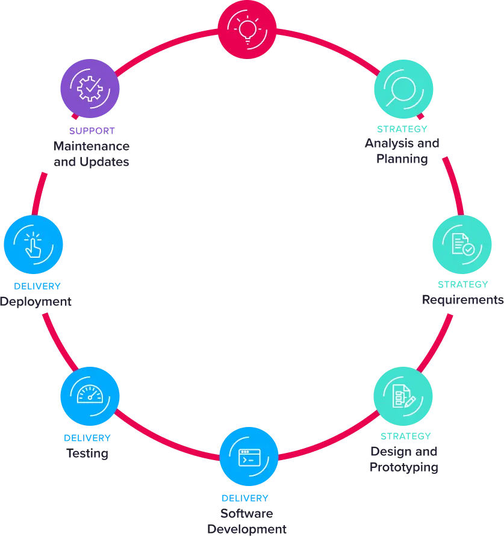

12/08/2024
The 7 Stages of Developing Custom Software
Developing custom software to meet specific business requirements is becoming an increasingly prevalent component for businesses seeking to differentiate themselves. Most businesses have some aspects of software customised to meet specific business or customer needs, in fact, the global custom software market has been valued at over $180 billion (Research And Markets,) and it is growing at a staggering 11.8% annually.
At Propel Tech, we are fortunate to work on a whole range of custom software solutions, from property solutions, manufacturing systems and customised eCommerce to custom booking software and baggage tracking and alert systems. You can read more about our varied projects in our case studies.
Unlike off-the-shelf software, custom solutions are tailor-made to fit the specific requirements of an organisation, offering enhanced flexibility, scalability, and integration capabilities. Want to know more about custom software? Read our comprehensive guide to get you started.
If you are considering introducing or enhancing your custom software, then understanding the stages of development, and considering the question, “how does software development work?”, can help you make informed decisions, manage expectations, and ensure the success of your bespoke software projects.
When should you consider developing custom software?
Custom software development is not always the best solution for every organisation. Expert consultation will help to guide you to the right solution, however, to help you consider the best way forward, here are some scenarios to help you make the right choice:
Speed to market:
With a bespoke software solution you control the timeline and are the only focus for software changes and development - unlike off the shelf where the decision on the priority of changes is out of your hands.
Unique business processes:
If your business has unique processes that cannot be accommodated by off-the-shelf software, a custom solution can be designed to fit your specific needs, this ensures your processes are being maximised.
Scalability requirements:
If your business anticipates significant growth, custom software can be built with future plans to scale with your operations in mind, making growth easier to manage and flexibility built in to respond to changes in customer needs and operations.
Integration needs:
When existing systems need to be integrated seamlessly, custom software offers unparalleled options that can be designed to ensure compatibility and efficient data exchange across all systems without compromise.
Competitive advantage:
Custom software can provide a unique competitive edge by offering features and functionalities that are not available in standard off-the-shelf software, allowing for differentiation and improve functionality.
Security concerns:
Custom solutions can be tailored to meet specific security requirements, ensuring that sensitive data is protected according to industry standards and that unique requirements are covered.
User experience:
If the user experience is a priority, custom software can be designed to offer a more intuitive and satisfying interaction for users, planning the software UA and UX to the exact journey your customers require.
How does custom software development work?
If you decide that developing custom software is the best solution for you, the process of developing custom software typically involves seven key stages. Read more about our services and process.
Each stage plays a vital role in ensuring that the final product meets the intended requirements and delivers value to the organisation.

- Analysis and planning
- Requirements
- Design and prototyping
- Software development
- Testing
- Deployment
- Ongoing management and updates
The custom software development process, step-by-step
We asked our Head of Operations, Chris Kirkham, to break down the key stages of custom software development, from analysis to testing and ongoing management.
“The journey of custom software development is an ongoing and evolving, yet structured process, involving several stages - each of which builds upon the previous one to create a cohesive and functional final software product.”
Chris Kirkham - Operations Director, Propel Tech
Stage 1: Analysis and planning:
Objective: Establish the foundation for the project by understanding the business needs, goals, and constraints.
“The analysis and planning stage is crucial as it sets the direction for the entire project. This stage focuses on getting the objectives clarified, agreed and documented in the creation of a project requirement, outlining the objectives, scope, and high-level plan for the development process.”
Chris Kirkham
This stage involves:
- Stakeholder meetings: Engage with key stakeholders to understand their vision, goals, and expectations.
- Requirement gathering: Collect detailed information about the business processes, challenges, and desired outcomes.
- Feasibility study: Assess the feasibility of the project in terms of technical, financial, and operational aspects.
- Project scope: Define the high-level scope of the project, including major functionalities, timelines, and budget estimates.
- Risk assessment: Identify potential risks and challenges that could impact the project and develop mitigation strategies.
Stage 2: Custom software requirements:
Objective: Conduct a detailed analysis to refine the project scope and create a comprehensive project plan.
“During this stage, the project really starts to take shape and the initial requirements gathered during the planning phase are analysed in greater detail to define the project scope more precisely and check all the details are correct.”
Chris Kirkham
This stage involves:
- Detailed requirement analysis: Work closely with stakeholders to elaborate on functional and non-functional requirements.
- Use case development: Create use cases and user stories to capture detailed interactions and workflows.
- Scope definition: Clearly define what is included in the project scope and what's not - to avoid scope creep.
- Technical specifications: Develop detailed technical specifications that outline the architecture, technologies, and tools to be used.
- Project plan: Create a detailed project plan that includes timelines, milestones, resource allocation, and deliverables.
By the end of this stage, the project team should have a clear understanding of what needs to be built, how it will be built, and the timeline for delivery.
Stage 3: Custom software design:
Objective: Develop the design and plan for different scenarios to ensure a robust and user-friendly solution.
“The design stage is where the creative and technical aspects of the project come together. This stage is critical to get right and it requires rigorous problem-solving and collaboration, this stage results in detailed design documents and prototypes that guide the development process and ensure alignment with stakeholder expectations.”
Chris Kirkham
This stage involves:
- System architecture design: Define the overall system architecture, including the main components, data flow, and integration points.
- User interface (UI) design: Create wireframes and mockups for the user interface, focusing on usability and user experience.
- Database and integration design: Design the database schema and any integration to ensure efficient data storage, retrieval, and management.
- Scenario planning: Plan for different scenarios, such as peak usage, error handling, and scalability to ensure the system can handle various conditions.
- Prototyping: Develop prototypes to validate the design and gather feedback from stakeholders.
Stage 4: Software development:
Objective: Build the software according to the design specifications and requirements.
“The software development stage is where the actual coding and construction of the software takes place. This stage involves close collaboration among developers, designers, and testers to ensure that the software is built correctly and efficiently.”
Chris Kirkham
This stage involves:
- Environment setup: Set up environments across staging, development, systems testing, user-acceptance testing, frameworks, and version control systems.
- Coding: Write code for the different components of the software, following coding standards and best practices.
- Integration: Integrate various modules and components to create a cohesive system.
- Data Migration: At this stage it is critical to build data migration programs to move data and check the data has all come over and all the functionality works as expected with the new system.
- Code reviews: Conduct code reviews to ensure code quality, consistency, and adherence to design specifications.
- Documentation: Create technical documentation to support future maintenance and updates.
Stage 5: Testing:
Objective: Validate the software to ensure it meets the requirements and is free of defects.
“Testing is a critical stage in the software development process, at Propel we get testers involved early in the process and involve them in the design and planning as it ensures thier are no nasty surprises at the testing stage and that testing focuses on quality and reliability of the software. By the end of this stage, the software should be thoroughly tested and ready for deployment.”
Chris Kirkham
This stage involves:
- Unit testing: Test individual components or units of the software to ensure they function correctly.
- Integration testing: Test the integration of different modules to ensure they work together seamlessly.
- System testing: Test the complete system to validate its functionality, performance, and security.
- User acceptance testing (UAT): Conduct testing with end-users to ensure the software meets their needs and expectations.
- Data Migration Data Migration almost always needs to be run and tested multiple times before the final "deployment" run.
- Bug Fixing: Identify and fix any defects or issues discovered during testing. Read about why you should never ignore a bug.
Stage 6: Deployment:
Objective: Deploy the software to the production environment and ensure it is ready for use.
“The implementation stage involves deploying the software to the live environment and ensuring it is fully operational. Successful implementation ensures that the software is ready for use and that users are equipped to utilise its features.”
Chris Kirkham
This stage involves:
- Deployment planning: Create a deployment plan that outlines the steps for deploying the software, including backup and rollback procedures.
- Data migration: Migrate data from existing systems to the new software, if necessary.
- System configuration: Configure the software and any supporting infrastructure, such as servers and databases.
- Training: Provide training to end-users and administrators to ensure they can use the software effectively.
- Go-live: Launch the software in the production environment and monitor its performance.
Stage 7: Ongoing management and updates:
Objective: Maintain and update the software to ensure its continued performance and relevance.
“After the software is deployed, ongoing management and updates are necessary to keep it running smoothly and to address any new requirements, continuous review and improvement is essential to continuously optimise custom software. Ongoing management ensures that the software remains valuable and effective over time, adapting to changing business needs and technological advancements.”
Chris Kirkham
This stage involves:
- Monitoring: Continuously monitor the software for performance, security, and usage metrics.
- Maintenance: Perform regular maintenance tasks, such as applying patches and updates, to ensure the software remains secure and efficient.
- Support: Provide support to users to address any issues or questions they may have.
- Enhancements: Gather feedback from users and stakeholders to identify areas for improvement and develop new features or enhancements.
- Scalability: Plan for and implement scalability solutions to accommodate growing user needs and data volumes.
Considering developing or updating custom software?
Custom software development is a complex yet rewarding process that allows businesses to create cost efficient software solutions tailored to their specific needs.
Developing custom software with Propel Tech allows you to fully control the software deliverables, UA, UX, and integration and to critically prioritise and order the software development work to be done to give you the best return on your investment.
By partnering with experienced developers and following a structured development process, businesses can realise the full potential of their custom software solutions. Get in touch with our team to find out how we can help develop the right custom software solution for your business needs.